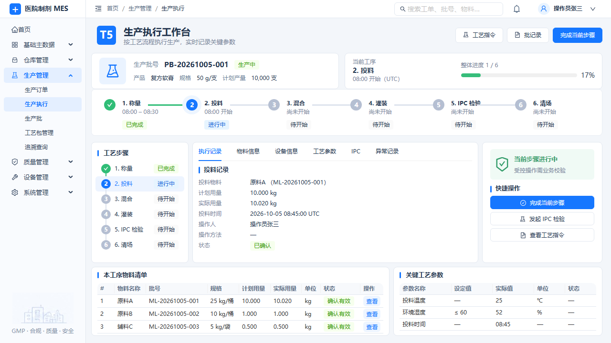
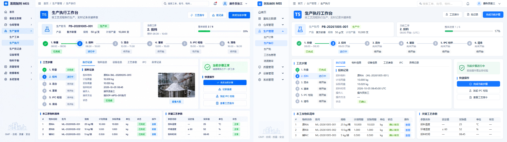
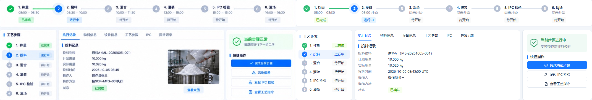

1280×720、缩放1:1。实际Vue页面、现有API契约夹具；不代表真实数据库验收。
已修复：横向及纵向工序连线、主体三栏定位与高度、标题/图标/状态层次、紧凑事实与底部三行表格、物料查看及选中记录。全量投料证据仍可查看；原操作权限、原因、签名及受控提交保持。
Typecheck / Build通过。PC布局与交互浏览器场景通过11.6s；独立IPC签名回归通过9.7s。无Console/Page Error或横向溢出。三栏顶部298px、底部表格560px、全部三行表格首屏可见。
契约限制：正式蓝图§9规定无真实照片Contract不得放静态示意图，不支持动作隐藏。照片/查看大图、记录偏差、预计时段、SOP操作方法、参数“正常”判定无法由现有数据合同实现；没有伪造。“已完成”进度为1/6，与参考图2/6统计不一致；保留已冻结的完成统计含义。投料状态保持CONFIRMED（确认有效），不能因示意图改成COMPLETED。菜单名称与权限保持正式合同。
现有合同可支持的布局检查通过；不声称整页100%一致。不修改API/DTO/数据库/Migration/权限/业务状态机/电子签名/FINAL BASELINE。未提交或推送。


